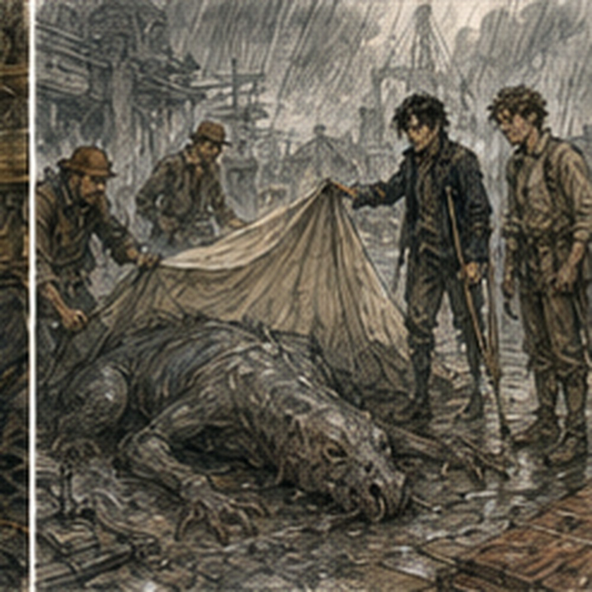
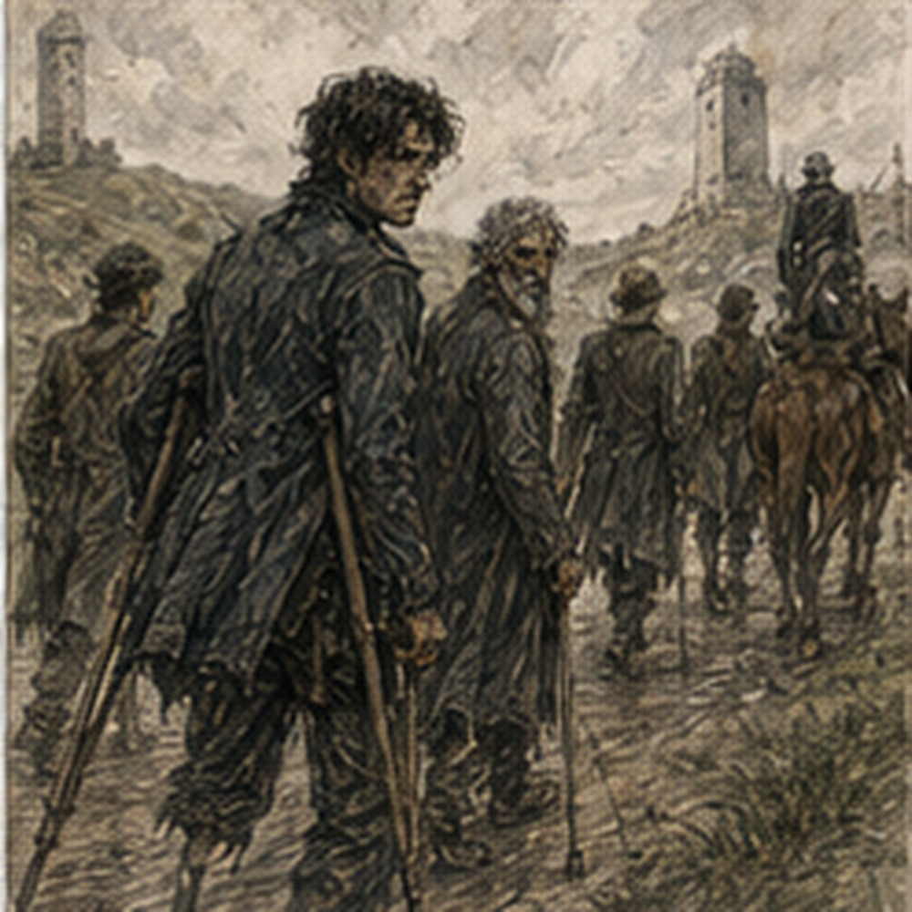

The bread remained gone. I checked. That was the first mistake of the morning. Not checking the sill. Caring. The outer ledge held flour dust, two black crumbs, and a streak that might have been butter if butter had survived the night, rain, birds, insects, and my imagination. No footprints. No claw marks. No note. No useful evidence. I closed the window.
Downstairs, Brina was already angry at dough.
“Too cold,” she said.
The dough did not apologize. Alden sat at a table eating yesterday’s coarse bread with jam. He had somehow acquired jam.
“Where did that come from?”
“Brina.”
I looked at Brina. She pointed a floury finger at a crock.
“Plum.”
“Why did he get some?”
“He asked.”
I looked at Alden. He spread more.
“That cannot be the lesson.”
“It is often the lesson.”
I asked for jam. Brina gave me jam. Terrible. My body had changed overnight. Not improved. Changed. The bruises had become more specific. Yesterday my entire side hurt. Today individual parts had organized themselves into complaints: hip, ribs, shoulder, palm, knee. My channels were quieter. The pressure behind my eyes was gone. The NO CASTING tag remained tied to my wrist. Alden’s NO LIFTING LEFT tag remained too.
He tested his shoulder when he thought I was not looking. I looked.
“Don’t.”
“I’m checking.”
“You are lifting your arm.”
“That is how I check.”
“Your healer can check.”
“You sound like her.”
“Good.”
He lowered it. I ate bread. No bells. That was new.
“What happened overnight?” I asked Brina.
“Bread.”
“In town.”
“Bread happened in town.”
“Apart from bread.”
She thought.
“East fire out.”
Good.
“Two missing people found.”
The single bell.
“Alive?”
“One.”
Not good.
“Which?”
“Don’t know.”
“Creatures?”
“Ask watch.”
“Road?”
“Ask watch.”
“Anything else?”
“Flour wagon came.”
That mattered to Brina more than creatures. I finished eating. At the door, Brina said, “Rooms tonight are not free.”
“We worked.”
“Yesterday.”
“How much?”
“Four copper each.”
Alden stopped.
“Four?”
“Or work.”
“What work?”
“Depends what breaks.”
I liked that less than a fixed price.
“Do we need to decide now?”
“Before midday.”
Ordinary problem. Again. We left. Darrowmere in morning looked less frightened and more tired. Boards covered two broken windows on Dyer’s Lane. A carpenter repaired a gate while the owner argued that he was using the wrong nails.
Three children carried a basket of eggs past a watch barricade. Someone had painted EAST ROAD CLOSED on a plank and leaned it against a barrel.
Below it, smaller:
NORTH ROAD CONTROLLED.
WEST OPEN.
The chalk board in the square had been reorganized. Not cleaned. Reorganized. ROOMS NEEDED had shrunk. WORK CREWS had grown. MISSING PERSONS contained five names. Two were crossed out. One had ALIVE beside it. One had BODY. One remained. Alden stopped. I stopped beside him. Neither of us knew the names. That did not make the board less heavy.
A new section read:
RECOVERED PROPERTY.
CART 14.
THREE HORSES.
RED TOOL CHEST.
SIX SACKS WOOL.
SWORD, ROAD TEAM.
Cal’s. Maybe mine.
“Road team,” Alden said.
“Yes.”
We went to command. Captain Doven was asleep at the map table. Standing. Not literally asleep. Close. Nemi Caul was gone. Iris was there. She had a cup in one hand and three written reports in the other. She saw me look at the cup.
“Coffee.”
“What is coffee?”
She looked at me. I knew coffee. Not future memory. Current world. I had simply never seen it here.
“Bitter bean drink.”
“That sounds terrible.”
“It is.”
She drank.
“Why?”
“Morning.”
Fair. Alden pointed at the property board outside.
“Swords?”
“Yard.”
“Both?”
“Recovery brought two.”
Cal’s sword had been inside the dead creature. Mine had been thrown at a creature and abandoned. Two swords. Good.
“Bodies?” I asked.
Iris pointed toward the rear yard.
“Also there.”
Of course they were. Alden looked at me.
“You care more about the bodies.”
“I care about my sword.”
“You looked toward the yard before she said sword.”
“I contain multitudes.”
“What?”
“Nothing.”
Doven opened his eyes.
“I heard that.”
“You were asleep.”
“No.”
“You were dreaming administratively.”
He rubbed his face.
“Report if you have one. Otherwise stop being interesting before breakfast.”
“We slept.”
“Excellent report.”
He looked at our tags.
“Medical review.”
“Where?”
“Infirmary.”
“Then bodies?”
“After.”
“Why?”
“Because if the healer says no, you do not touch anything.”
“I can look without touching.”
Doven stared.
“Medical review.”
We went. The same healer was there. Unfortunately. She recognized me. More unfortunately.
“No.”
“I have not asked anything.”
“You were going to.”
“Probably.”
She cut off the old tag. Good. Then checked my eyes. Palm. Breathing. Ribs. She pressed the bruised spot. I disliked her again.
“Headache?”
“Gone.”
“Channel heat?”
“No.”
“Tremor?”
“No.”
“Cast.”
I stared.
“What?”
“Tiny.”
“You told me not to.”
“Yesterday.”
“What kind?”
“Light.”
“I don’t know light.”
“Of course you don’t.”
She pointed at a wooden bead on the table.
“Move it.”
I almost laughed. Bean. Bead. The universe lacked imagination.
“How?”
“Magic.”
“That is broad.”
“Then do something small you actually know.”
I looked at the bead. Barrier. Coin-sized. Brief. No load. I formed it beside the bead and released. Clean. The bead did not move. Good. The healer watched my eyes.
“Again.”
I did. Slight pressure. No pain.
“Again.”
Third. Pressure increased. Not sharp. She held up a hand.
“Stop.”
I stopped. She wrote a new strip.
LIMITED CASTING.
I read it.
“What does limited mean?”
“Exactly what it sounds like.”
“That is not measurable.”
“It means if you start experimenting, I will break your fingers.”
“Medical terminology has declined.”
She tied the strip.
“Small, low-load casting. No repeated pressure work. Stop at headache, heat, tremor, numbness, or visual changes. You do not test where the limit is.”
“I understand.”
She narrowed her eyes.
“I think you understand words.”
“That is a start.”
Alden’s review went worse. He could move his shoulder. He could not lift against resistance without pain.
New tag:
LIGHT USE LEFT.
He looked at mine.
“Yours is better.”
“It is not a competition.”
“Yours says casting.”
“Yours says arm.”
“I have two arms.”
“I have one mana system.”
He considered.
“I win.”
“You have misunderstood.”
We recovered our swords. Mine had a chipped edge. Cal’s had dried black blood in the fuller and a new notch near the tip. Cal himself was not there.
“Where is he?” Alden asked.
Property clerk shrugged.
“Rider.”

That was answer enough. He had a job. He had gone back to it. I liked that. The dead creatures were under canvas at the far end of the yard. Four now, not three. That had changed overnight. A watch mage stood beside them. Young man. Maybe twenty-six. Blue cord around one sleeve. He was arguing with a butcher.
“Muscle attaches here,” the butcher said.
“I can see that.”
“Then stop calling it abnormal.”
“It is abnormal.”
“For a dog.”
“It looks like a dog.”
“It is not a dog.”
Good. I approached. The mage saw my Bronze pin. Then my tag.
“Limited casting?”
“Yes.”
“Then don’t.”
“I was not planning to.”
He looked skeptical. Reasonable. The butcher lifted the canvas. Dead creature. Less frightening. More wrong. Death had taken away the smoothness. Now the joints looked merely excessive. The black ridge along the spine was hair. The chest ridges were visible through pale underside skin. I crouched. Did not touch.
“Fourth recovered where?”
The mage said, “East wall.”
“Last night?”
“Early morning.”
“Same?”
“Mostly.”
Mostly.
“What differs?”
He pointed.
“This one.”
Smaller. Narrower skull. Less ridge development. The butcher said, “Female.”
“How do you know?”
He looked at me. I regretted asking.
“Right.”
Alden laughed. The butcher continued.
“Young too.”
“How young?”
“Not a pup. Not old.”

The mage said, “Mana is lower.”
“Because younger?”
“I don’t know.”
Good.
“What have you found?”
The mage crossed his arms.
“Why?”
There it was. Not my investigation.
“I fought them.”
“That gets you treatment, not access.”
Correct. I stood.
“Fair.”
He looked surprised. I started to leave.
“Wait.”
I stopped. He pointed at my wrist.
“What kind of casting?”
“Barrier.”
That changed his face. Not awe. Interest.
“Guild Barrier?”
“No.”
“What school?”
“Mostly bad decisions.”
Alden said, “Accurate.” The mage looked at him.
“Who are you?”
“Alden.”
“Helpful.”
“Sometimes.”
The butcher went back to work. The mage said, “I’m Kellan.”
“Greg.”
“I know.”
Again. I disliked Darrowmere. Kellan crouched by the body.
“Watch mage yesterday called the mana diffuse.”
“Yes.”
“That was me.”
“Good.”
“It changed.”
I became still.
“After death?”
“Yes.”
“How?”
“Dropped.”
“That is expected.”
“Not like this.”
He pointed to three chalk marks on a board. Numbers. Not a scale I knew. Current professional measurement. Good.
“What are those?”
“Field saturation readings.”
I did not pretend.
“Teach me the units later. What matters now?”
Kellan tapped the first.
“Alive estimate from residue at wound site.”
Second.
“Immediately after death.”
Third.
“This morning.”
The third was much lower.
“How much lower than expected?”
“Enough that I checked the instrument.”
“Instrument good?”
“Against reference stone.”
Good.
“Other bodies?”
“Same direction. Different rates.”
“Meaning?”
“I don’t know.”
Better. The butcher said, “Meaning dead things stop being magical.” Kellan looked annoyed.
“That is not precise.”
“It is useful.”
Also good. Alden was examining the creature’s feet. Not touching. Learning. He pointed.
“Claws are worn.”
The butcher looked.
“Yes.”
“From walls?”
“Could be road.”
“Could be stone.”
“Could be both.”
Alden nodded. No grand conclusion. Good. Kellan lifted one front paw. The pads were cut. Not fresh. Old damage. Scarring.
“These have been on hard ground,” Alden said.
“Probably,” the butcher replied.
Not forest animals wandering in yesterday. Maybe. Do not jump. I looked at the teeth. Ordinary teeth in unusual jaw. One tooth was broken. Another worn flat. The body had history. Whatever it was, it had existed before Darrowmere became afraid of it. That was obvious. Still useful. A shadow crossed the yard. I looked up. Bird. Actual bird. It landed on the roof.
I watched it. Alden noticed. Said nothing. Good. Kellan covered the body.
“Watch is sending samples to the city.”
“Our city?”
“Yes.”
“Who?”
“Guild warder requested.”
Edrin. Maybe.
“Edrin Saye?”
Kellan looked at me.
“You know her?”
“Yes.”
“Then yes.”
Interesting. South Canal seal. Darrowmere creature samples. Not necessarily connected. Probably not. One competent warder could receive multiple strange problems because that was her job. Do not make the world smaller. Doven found us in the yard.
“You two available?”
Alden said, “Yes.” I said, “For what?” Doven looked at Alden.
“He learns.”
“Slowly.”
Doven handed us a paper.
“West road escort.”
I blinked.
“West?”
“Yes.”
“Away from creatures?”
“That is generally where we send civilians.”
The paper listed fourteen people. Three children. One injured adult. Two carts. Destination: our city. Escort needed to west checkpoint, then city watch handoff. No monster hunt. No east breach. No mystery. Just people leaving. Alden read it.
“When?”
“Half hour.”
“Pay?”
“Guild relief rate. Eight copper each.”
Alden looked at me. Eight copper. Enough for rooms, food, and some replacement equipment. Not enough to become interesting. Perfect.
“Take it,” I said.
Alden frowned.
“What?”
“You wanted Darrowmere.”
“We’re in Darrowmere.”
“You want east.”
He did. I could see it. So could Doven. Alden looked toward the eastern roofs. Then at his LIGHT USE LEFT tag. Then at the escort sheet.
“Eight copper?”
“Each,” Doven said.
Alden sighed.
“Fine.”
Doven handed him the paper.
“Good.”
“What about after?”
“If you come back, ask.”
Not promised. Not denied. Work. We met the civilians outside the west gate. One cart carried bedding, pots, and an old man with a bandaged foot. The other carried sacks and three children who had been told not to touch anything and were touching everything. A woman counted everyone twice. Then a third time.
“Fourteen,” she said.
“Fourteen,” Alden agreed.
She pointed at him.
“You count too.”
He counted. Fourteen. I counted. Fourteen. Dema Rusk would have approved. That annoyed me. We started west. The town receded behind us. No bells. No screaming. No monsters. Just wheels, hooves, and children asking how far. The smallest girl stared at my wrist.
“What does limited casting mean?”
“It means I am allowed to do very little magic.”
“Why?”
“Because I did too much yesterday.”
“Was it good?”
“Some of it.”
“Can you make fire?”
“No.”
“Light?”
“No.”
“Fly?”
“No.”
She looked disappointed.
“What can you do?”
“Barrier.”
“What’s that?”
I held up my hands.
“Not demonstrating.”
She thought.
“So nothing.”
Alden laughed. I ignored him. At the first rise outside town, I looked back. Darrowmere sat under clear morning light. Smoke thin now. East wall visible. Bell tower. Roofs. Normal from here. Almost. Something stood on the bell tower. I stopped. Too far. A dark shape. Could be a person. Could be a bird. Could be part of the stone.
“What?” Alden asked.
I looked. The shape was gone.
“Nothing.”
He followed my gaze.
“Still?”
“Yes.”
He did not joke. That was new. The woman ahead shouted, “Are you escorting or sightseeing?” Alden called, “Escort.” He started walking. I stayed one second longer. Nothing moved on the tower. No proof. No bread. No tap. Just distance. I turned west.
Fourteen people. Two carts. Three children. One injured adult. Eight copper. That was the job. For once, the mystery could wait behind us. It did not feel like it was waiting.